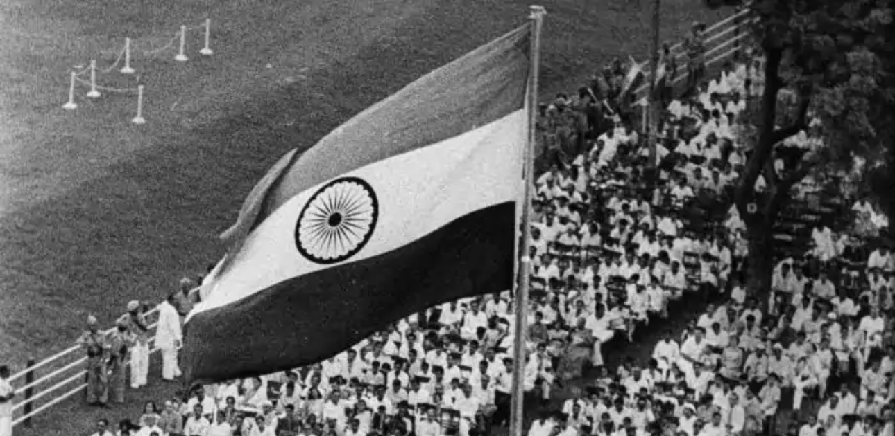
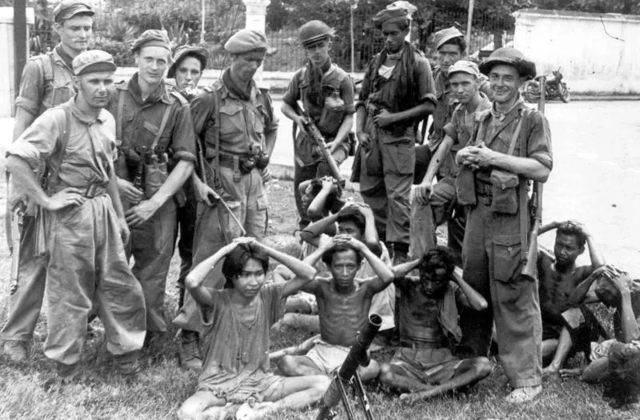
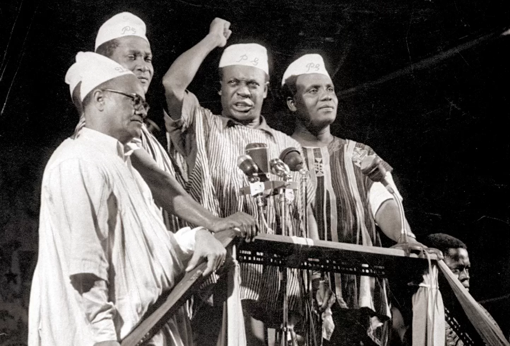
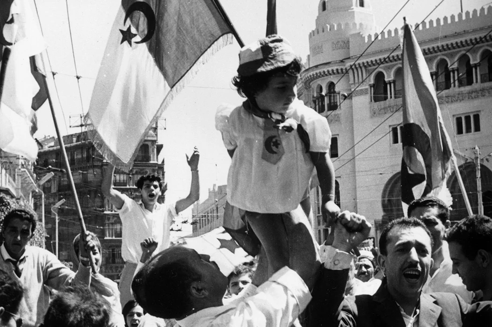
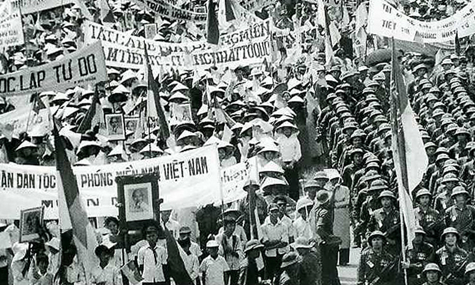
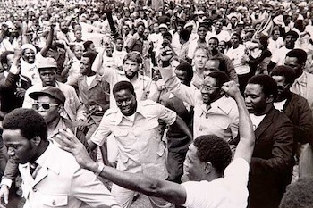

At its core, decolonization signifies the undoing of colonial rule, where colonized nations assert their right to govern themselves, free from foreign domination. This process often involves a series of political and social movements, negotiations, and sometimes violent struggles, as colonized peoples seek to dismantle the structures of imperial control that have subjugated them. Decolonization is not merely a political transition; it also entails a profound cultural shift as nations work to reclaim their identity, languages, traditions, and histories that were suppressed or altered under colonial rule. The decolonization process varies greatly among countries, influenced by factors such as the nature of colonial rule, the level of economic development, and the existing political structures at the time of independence. The post-World War II era marked a pivotal turning point for decolonization. The war significantly weakened European powers, both economically and politically, leading to increased demands for independence among colonized nations. The establishment of the United Nations in 1945 further facilitated decolonization efforts by promoting the principles of self-determination and human rights. Many former colonies sought to challenge the legitimacy of colonial rule, using political activism, diplomacy, and, in some cases, armed resistance to achieve their goals. Thus, decolonization can be viewed as both a reaction to colonial oppression and a proactive movement toward self-governance and cultural revival.
One of the most prominent examples of decolonization is India’s struggle for independence from British colonial rule, culminating in its independence in 1947. British colonialism in India spanned nearly two centuries, marked by economic exploitation, social divisions, and cultural imposition. The Indian independence movement gained momentum in the early 20th century, fueled by growing discontent among various sections of society. Key figures like Mahatma Gandhi and Jawaharlal Nehru emerged as prominent leaders advocating for nonviolent resistance and civil disobedience against colonial authorities. Gandhi's philosophy of Satyagraha emphasized peaceful resistance and mass mobilization as tools for achieving independence. The movement rallied diverse segments of Indian society, transcending regional, religious, and linguistic boundaries. Key events, such as the Salt March in 1930, demonstrated the power of collective action against colonial laws, galvanizing public support for the independence cause. The Indian National Congress, led by figures like Gandhi and Nehru, played a crucial role in negotiating with the British government, culminating in the demand for independence during World War II. As World War II weakened British control and increased calls for independence, the Labour government elected in 1945 recognized the need to address Indian aspirations. Ultimately, in August 1947, India gained independence, leading to the partition of the subcontinent into two separate nations: India and Pakistan. This momentous event marked the end of colonial rule but also initiated significant challenges, including communal violence, mass migrations, and the struggle to forge a unified national identity amidst diverse ethnic and religious backgrounds. India's decolonization was not just a political transition; it also involved reclaiming cultural identity and addressing the social injustices that had been exacerbated by colonial rule. Post-independence, India faced the monumental task of nation-building, aiming to integrate its diverse populace while upholding democratic principles and social justice. This example illustrates the complexity of decolonization as a multifaceted process that encompasses not only the achievement of political independence but also the broader struggle for social, cultural, and economic self-determination.
Why is it essential to learn Decolonization?
Decolonization is a pivotal chapter in world history that reshaped the political landscape of the 20th century and continues to influence contemporary global relations. By studying decolonization, one gains insights into the causes and consequences of colonial rule, including the exploitation of resources, cultural suppression, and social stratification imposed by colonial powers. This historical context is crucial for comprehending the dynamics of current geopolitical tensions and conflicts, particularly in regions that were formerly colonized. For example, the borders drawn during colonial rule often disregarded ethnic, cultural, and linguistic divisions, leading to ongoing conflicts in places like Africa and the Middle East. Additionally, many post-colonial nations still grapple with the economic and political challenges stemming from their colonial pasts, including issues of governance, national identity, and socio-economic disparities. Understanding the historical context of decolonization allows us to appreciate the complex legacies of colonialism and the contemporary struggles for equality and justice faced by many nations today. This knowledge fosters a more nuanced understanding of international relations and the factors that contribute to global inequalities, thereby enriching discussions about diplomacy, development, and human rights.
Decolonization is not just a political process; it also involves a profound cultural and psychological transformation as nations work to reclaim their identities, languages, and traditions that were suppressed under colonial rule. Studying decolonization provides insight into how colonized peoples have resisted cultural imperialism and sought to revitalize their heritage. The process of decolonization often includes the reclamation of indigenous knowledge systems, traditions, and languages, which were systematically devalued or eradicated during colonial times. For instance, many former colonies have embarked on initiatives to revive indigenous languages, promote traditional arts, and restore cultural practices that were lost or diminished due to colonial policies. Understanding this aspect of decolonization highlights the importance of cultural self-determination and the resilience of colonized peoples in the face of oppression. Moreover, it encourages a recognition of the diverse cultural contributions that have emerged from decolonization efforts, fostering a greater appreciation for multiculturalism and diversity in our global society. Learning about these cultural transformations allows individuals to critically engage with the narratives surrounding identity, power, and heritage, emphasizing the value of honoring diverse histories and perspectives.
The study of decolonization is inherently linked to contemporary social justice movements, as many of the struggles for equality and rights today are rooted in the historical injustices of colonialism. By understanding the principles and practices that emerged from decolonization efforts, individuals can better comprehend the frameworks that inform current movements advocating for social justice, equity, and human rights. For instance, the ongoing calls for reparations, land acknowledgments, and recognition of indigenous rights are deeply intertwined with the legacies of colonialism and the fight for decolonization. Moreover, the examination of decolonization can inspire current and future generations to challenge systemic injustices and advocate for transformative change. Social movements around the world—whether addressing racial inequality, gender justice, environmental sustainability, or indigenous rights—draw upon the lessons learned from historical struggles against colonial oppression. By studying decolonization, individuals become more equipped to engage in critical discourse about power dynamics, advocate for marginalized communities, and contribute to building a more just and equitable society. This knowledge fosters a sense of responsibility and agency, empowering individuals to participate in efforts to dismantle systems of oppression and promote human rights for all.
Periods
India (1947)
India’s decolonization is one of the most notable examples of the struggle for independence from colonial rule. British colonialism in India spanned nearly two centuries, characterized by economic exploitation and cultural domination. The Indian independence movement began to gain momentum in the early 20th century, fueled by a growing sense of nationalism and discontent with British rule. Key figures, including Mahatma Gandhi and Jawaharlal Nehru, emerged as leaders advocating for nonviolent resistance and civil disobedience. The movement saw significant events such as the Salt March in 1930, where Gandhi led a massive protest against British salt laws, symbolizing the broader resistance against colonial oppression. Following World War II, weakened by the war's toll and mounting pressure for independence, the British government initiated negotiations. On August 15, 1947, India was granted independence, resulting in the partition into two separate nations: India and Pakistan. This event not only marked the end of British colonial rule but also initiated a complex process of nation-building, marked by communal violence, mass migrations, and the challenge of forging a unified national identity amidst diverse ethnic and religious backgrounds. More about Indian Independence Movement

Cr.: The Leaflet
Indonesia
Indonesia’s struggle for independence from Dutch colonial rule reflects a significant decolonization process in Southeast Asia. The archipelago was under Dutch control for over three centuries, during which the Dutch exploited its vast resources and imposed their cultural and political systems. After World War II, nationalists in Indonesia, led by figures like Sukarno and Mohammad Hatta, declared independence on August 17, 1945. However, the Dutch were reluctant to relinquish their control, leading to a violent struggle known as the Indonesian National Revolution. This conflict featured guerrilla warfare, mass protests, and international diplomatic efforts to mediate the situation. The struggle gained international attention and support, particularly from newly independent countries and the United Nations. In 1949, following years of negotiations and mounting pressure, the Dutch formally recognized Indonesia's sovereignty, leading to the establishment of the Republic of Indonesia. This decolonization process underscored the broader trends of anti-colonial sentiment in Asia and set the stage for Indonesia's ongoing development as a sovereign nation. More about Indonesian Revolution

Cr.: AOAV
Ghana (1957)
Ghana holds a prominent place in the history of decolonization in Africa, as it was the first sub-Saharan African country to achieve independence from colonial rule. Formerly known as the Gold Coast under British control, Ghana’s path to independence was marked by a growing nationalist movement in the mid-20th century. The United Gold Coast Convention, formed in 1947, became a significant political force advocating for self-governance. Under the leadership of Kwame Nkrumah, who emphasized the need for Pan-African unity and independence, the movement gained momentum. Nkrumah's government utilized nonviolent protests, strikes, and grassroots mobilization to challenge colonial authorities. The culmination of these efforts resulted in Ghana gaining independence on March 6, 1957. This moment not only inspired other African nations in their struggles for independence but also marked the beginning of a wave of decolonization across the continent, as countries such as Nigeria, Kenya, and Tanzania followed suit in the subsequent years. Ghana's independence represented a significant milestone in the broader narrative of anti-colonial resistance and the quest for self-determination in Africa. More about Ghanian Independence Movement

Cr.: GBC Ghana Online
Algeria (1962)
The decolonization of Algeria from French colonial rule exemplifies one of the most violent and protracted struggles for independence in the 20th century. Algeria had been under French control since 1830, and over the years, the colonial government implemented policies that marginalized the indigenous population while promoting French settlement and assimilation. The Algerian War of Independence began in 1954, led by the National Liberation Front (FLN), which employed guerrilla warfare and organized mass uprisings against French forces. The conflict was marked by brutal reprisals, torture, and widespread violence on both sides, with significant civilian casualties. International attention to the humanitarian crises and the desire for self-determination fueled the Algerian struggle. After years of fighting and mounting pressure, France ultimately agreed to negotiate, leading to the Evian Accords in 1962, which granted Algeria its independence on July 5, 1962. This decolonization process highlighted the extreme costs of colonialism and the resilience of nationalist movements, as well as the broader implications for post-colonial governance and national identity in the years that followed. More about Algerian War

Cr.: JSTOR Daily
Kenya (1963)
Kenya's journey to independence is another significant example of decolonization in Africa, characterized by a combination of political negotiation and violent struggle. British colonialism in Kenya involved land dispossession, economic exploitation, and the imposition of a settler colonial system that marginalized the indigenous population. The Mau Mau Uprising, which began in the 1950s, became a pivotal moment in the fight for independence, with the Kikuyu people leading a violent rebellion against British authorities. The British response involved widespread repression, including mass arrests and the establishment of detention camps. As the conflict escalated, international attention grew, alongside increasing pressure for decolonization from within Kenya and the broader African continent. In 1960, constitutional reforms led to the formation of a legislative council, and negotiations between British officials and Kenyan leaders, including Jomo Kenyatta, gradually progressed toward independence. On December 12, 1963, Kenya officially gained independence, with Kenyatta becoming the country's first Prime Minister. This decolonization process not only marked the end of British colonial rule but also paved the way for addressing the legacies of colonialism, such as land redistribution and national unity. More about Kenya's Independence
Cr.: Guardian
Vietnam (1976)
Vietnam’s path to independence is a complex narrative marked by colonialism, conflict, and the quest for national unity. The region was under French colonial rule from the mid-19th century until World War II, during which significant resistance movements emerged. The Viet Minh, led by Ho Chi Minh, declared independence from France in 1945 following Japan's occupation during the war. However, the French sought to re-establish control, leading to the First Indochina War. The conflict concluded in 1954 with the Geneva Accords, which temporarily divided Vietnam into North and South at the 17th parallel. The North, led by Ho Chi Minh's communist government, and the South, backed by the United States, became embroiled in a protracted and devastating conflict known as the Vietnam War. The war concluded in 1975 when North Vietnamese forces captured Saigon, leading to the reunification of Vietnam under communist control. This decolonization process illustrated the broader dynamics of Cold War geopolitics, where the struggle for independence was intricately linked to ideological battles and the interests of global superpowers. More about Vietnamese Independence

Cr.: Vietnam The Art of War
Zimbabwe (1980)
Zimbabwe's journey to independence from British colonial rule is marked by a protracted struggle against settler colonialism and racial discrimination. Formerly known as Southern Rhodesia, Zimbabwe was characterized by a deeply entrenched system of white minority rule that marginalized the indigenous African population. The fight for independence gained momentum in the 1960s, with nationalist movements such as ZANU (Zimbabwe African National Union) and ZAPU (Zimbabwe African People's Union) emerging to challenge colonial authorities. The Rhodesian Bush War (also known as the Second Chimurenga) ensued, involving guerrilla warfare and significant violence. The conflict drew international attention and support for the liberation movements, particularly from neighboring countries and global anti-colonial advocates. Following years of armed struggle and diplomatic negotiations, Zimbabwe achieved independence on April 18, 1980. Robert Mugabe, leader of ZANU, became the country's first Prime Minister. The decolonization of Zimbabwe highlighted the complexities of nation-building in a post-colonial context, as the new government faced significant challenges related to land reform, economic development, and addressing the legacies of colonial oppression. More about Independence of Zimbabwe

Cr.: African American Registry
Society
Social Stratification and Class Dynamics
One of the most immediate impacts of decolonization on society was the shift in power structures and class dynamics. Colonial societies were typically characterized by a rigid social hierarchy, with the colonizers and their local elites at the top, while the majority indigenous population was marginalized. After independence, newly decolonized nations faced the difficult challenge of dismantling these colonial social structures while addressing economic disparities, class divisions, and land ownership issues.
For instance, in India, after gaining independence from British rule in 1947, the government faced the monumental task of addressing social inequality, particularly the rigid caste system, which had been both perpetuated and manipulated by the British colonial administration. While India's new constitution abolished "untouchability" and aimed to promote equality, the deep-seated social divisions inherited from both pre-colonial and colonial times continued to influence the country's social fabric. Land reforms were introduced, but these were unevenly implemented, leaving many rural communities in poverty. The decolonization process thus marked a period of transition, where the aspiration for a more egalitarian society clashed with the enduring legacy of colonialism and entrenched social hierarchies
Identity Reformation and Nationalism
Decolonization also triggered a powerful process of identity reformation as newly independent nations sought to reclaim and redefine their cultural and national identities, which had been suppressed under colonial rule. The colonial project was not just a political and economic endeavor but also a cultural one, as European powers often imposed their languages, religions, and values on colonized peoples. Upon gaining independence, societies embarked on a quest to revive indigenous cultures, languages, and traditions that had been marginalized or lost during the colonial period.
In Algeria, for example, the struggle for independence from French colonial rule, which culminated in 1962, was not only a political revolution but also a cultural one. The Algerian people had endured over a century of French colonial domination, during which their language, religion (Islam), and cultural practices were actively suppressed. After independence, the new Algerian government emphasized the importance of reclaiming and reviving Arab and Islamic identity as a core part of the national consciousness. French, which had been the language of the colonizers, was gradually replaced by Arabic as the official language, and efforts were made to revitalize Islamic traditions that had been marginalized under colonial rule. This reassertion of cultural identity was central to Algeria’s post-colonial society, symbolizing a broader movement across decolonizing nations to resist the lingering cultural effects of colonialism.
Family and Gender Roles
Decolonization had profound effects on gender roles and the status of women in post-colonial societies. Colonial powers had often imposed patriarchal structures that reinforced traditional gender roles and excluded women from political and economic participation. In the wake of independence, women in many newly decolonized nations began to demand greater rights and representation, both in political life and within their communities. However, the relationship between decolonization and gender was complex, as many post-colonial leaders sought to build national unity by emphasizing traditional values, which sometimes included reinforcing conservative views on gender roles.
In Kenya, for example, the fight for independence from British rule (culminating in 1963) was marked by significant contributions from women, particularly in the Mau Mau Uprising, where women played crucial roles as fighters, spies, and couriers. After independence, however, the status of women remained a contentious issue. While women had contributed to the liberation struggle, they were often sidelined in the post-colonial political landscape, with male leaders dominating the newly independent government. Nevertheless, the seeds of women's movements had been planted, and over time, women in Kenya and across Africa began organizing for greater rights, demanding access to education, healthcare, and political representation. The legacy of decolonization in terms of gender roles is thus one of both progress and challenge, as societies grappled with how to integrate women into public life while balancing traditional cultural values.
Religion
Religion played a complex and varied role in the decolonization process. In many cases, religious institutions and leaders were deeply involved in the anti-colonial movements, while in other cases, religion was used by colonial powers to maintain control. After independence, newly decolonized nations had to navigate the role of religion in shaping their national identity, political systems, and social cohesion.In India, religion was both a unifying and divisive force during the decolonization process. The struggle for independence was marked by the participation of both Hindu and Muslim leaders, as well as others from minority faiths. Mahatma Gandhi famously incorporated Hindu values of non-violence and spirituality into his vision for Indian independence, seeking to build a nation based on moral and ethical principles. However, the role of religion in India's decolonization was complicated by the growing tensions between Hindus and Muslims, which ultimately led to the partition of India and Pakistan in 1947. The partition was one of the most traumatic events of the decolonization period, resulting in mass displacement, violence, and the deaths of millions as Hindus and Muslims migrated to what were seen as their respective homelands. Religion, therefore, played both a positive and tragic role in India's decolonization, highlighting the difficulties of integrating religious diversity into a unified national identity.
In Algeria, the struggle for independence from French colonial rule was deeply intertwined with the revival of Islam as a symbol of national identity and resistance. The French colonial administration had sought to marginalize Islam and promote secularism, seeing it as a way to "civilize" the Algerian population and assimilate them into French culture. However, for many Algerians, Islam was a core part of their identity, and the anti-colonial struggle became a way to reclaim their religious and cultural heritage. After gaining independence in 1962, the Algerian government promoted Islam as the state religion and sought to integrate Islamic principles into the national legal and educational systems. However, the role of Islam in Algerian society remained a source of tension, especially as the government attempted to balance secularism and religious tradition in its modernization efforts.
In many parts of Africa, Christian missionary activities were closely tied to the colonial project, with European powers using religion as a tool for control and assimilation. After independence, some African leaders sought to distance themselves from the colonial legacy of Christianity, while others embraced it as part of their national identity. In Kenya, for example, Christianity had been promoted by British missionaries during the colonial period, and many anti-colonial leaders, such as Jomo Kenyatta, had been educated in Christian schools. After independence in 1963, Kenya remained a predominantly Christian country, but there was also a revival of indigenous African religious practices and beliefs, as people sought to reconnect with their pre-colonial heritage. Religion in the decolonization process, therefore, played multiple roles: as a source of resistance against colonial domination, a tool of colonial power, and a central element in the post-colonial project of nation-building. In many newly independent nations, religion became a key aspect of the search for identity, legitimacy, and social cohesion in the wake of colonialism. At the same time, it also highlighted the challenges of integrating diverse religious traditions into a unified national identity, particularly in countries where colonialism had exacerbated religious or sectarian divisions.
Education and Intellectual Life
The process of decolonization had a profound impact on education and intellectual life in the newly independent countries. Colonial powers had often imposed education systems that served their own administrative and economic needs, rather than the needs or cultures of the local populations. The curriculum was typically Eurocentric, focusing on the history, language, and values of the colonizers, while local languages, traditions, and histories were marginalized. After gaining independence, many countries sought to reform their education systems to better reflect their cultural identities, national priorities, and the need for development. In India, for example, the education system inherited from British colonial rule was geared towards producing a small elite to staff the colonial bureaucracy. Following independence in 1947, Indian leaders recognized the need for a broader, more inclusive education system that could support the country's economic and social development. The first Indian Prime Minister, Jawaharlal Nehru, placed a strong emphasis on science and technology education, establishing institutions such as the Indian Institutes of Technology (IIT) to build a skilled workforce capable of modernizing the country. At the same time, there was a movement to reintroduce Indian languages, history, and philosophy into the curriculum, as part of the broader project of reclaiming Indian culture and identity after centuries of British dominance. However, challenges such as unequal access to education, regional disparities, and the legacy of caste-based discrimination persisted, complicating efforts to reform the system.
In African nations like Ghana, the colonial education system had been limited to a small elite, often with a curriculum that promoted Western values and denigrated African cultures. After independence in 1957, Ghana sought to create a more inclusive and relevant education system that would promote national development and pride in African heritage. Kwame Nkrumah, Ghana’s first president, championed education as a means of building a strong, independent nation. He expanded access to primary and secondary education and emphasized the teaching of African history, culture, and languages. At the university level, Nkrumah encouraged the study of African socialism and Pan-Africanism, reflecting his broader vision for Ghana as a leader in the liberation of Africa. However, like many newly decolonized nations, Ghana struggled with limited resources, brain drain, and political instability, which impacted the effectiveness of its education reforms. Intellectually, decolonization also led to the emergence of new schools of thought that critiqued colonialism and explored alternatives to Western-dominated knowledge systems. Thinkers such as Frantz Fanon, who was deeply involved in the Algerian struggle for independence, and Aimé Césaire, a prominent figure in the Negritude movement, challenged the cultural, psychological, and intellectual legacies of colonialism. Their works emphasized the importance of reclaiming indigenous knowledge, resisting cultural imperialism, and fostering a sense of pride in African, Asian, and Latin American identities. In this sense, decolonization was not just a political or economic process, but also an intellectual and cultural revolution that sought to reshape the way people understood themselves and their place in the world.
Economic Restructuring and Labor Movements
Economically, decolonization presented both opportunities and challenges. Colonial powers had often structured the economies of their colonies around the extraction of raw materials for export, benefiting the metropole at the expense of local development. As a result, many newly independent nations inherited economies that were heavily dependent on single industries or commodities, such as mining, agriculture, or oil. The task of diversifying and modernizing these economies became a central concern for post-colonial governments, many of which sought to nationalize key industries and pursue development policies aimed at fostering self-sufficiency.
In Ghana, the first sub-Saharan African country to achieve independence in 1957, the government led by Kwame Nkrumah pursued an ambitious program of economic restructuring aimed at reducing dependence on British-controlled industries and resources. Nkrumah's vision of a socialist, Pan-African state included nationalizing the cocoa industry, investing in large infrastructure projects such as the Akosombo Dam, and promoting industrialization. However, these efforts faced significant challenges, including international pressure, internal opposition, and the lingering economic structures left by colonialism. While Ghana's economy did experience some modernization, the country also struggled with debt, inflation, and political instability. The broader social impact of these economic policies included the rise of labor movements and protests as workers demanded fair wages, better conditions, and a greater say in the post-colonial economic order.
Science & Philosophy
Science
The process of decolonization fundamentally transformed how scientific knowledge was produced, disseminated, and applied across newly independent nations. During the colonial period, science often functioned as a tool of empire, used by colonial powers to exploit resources, control indigenous populations, and legitimize their dominance. Colonial governments typically limited the scientific education of the local populace, maintaining a small elite to support the administration, while reserving access to advanced knowledge and research for Europeans. With the onset of independence, science became a key area of focus for newly decolonized nations as they sought to establish autonomy, modernize their economies, and improve living standards. The challenge for many post-colonial governments was to decolonize scientific institutions, integrate local knowledge systems, and harness the power of science and technology to drive national development.
One of the first tasks for newly independent nations was to reform the colonial scientific and educational institutions they had inherited. In many cases, these institutions were designed to serve the economic and political interests of the colonizers, rather than the needs of the local population. After independence, governments in Asia, Africa, and Latin America embarked on efforts to make science and technology more relevant to their national development goals. This included expanding access to scientific education, building research institutions, and promoting indigenous scientists and thinkers. In India, for instance, the legacy of British rule left behind a scientific infrastructure designed to extract resources and support colonial industries. After independence in 1947, the Indian government, under the leadership of Jawaharlal Nehru, prioritized science and technology as central to the nation-building process. Nehru believed that a strong scientific base was essential for India’s modernization and independence from Western technological dominance. To achieve this, India established prestigious scientific and educational institutions, such as the Indian Institutes of Technology (IITs) and the Council of Scientific and Industrial Research (CSIR). These institutions were tasked with training Indian scientists and engineers and conducting research that could address the country’s pressing economic and social needs, such as agricultural productivity, industrial development, and public health. While the decolonization of scientific institutions in India was not without challenges, the country’s focus on science and technology helped lay the foundation for its later emergence as a global leader in sectors such as information technology and pharmaceuticals. Similarly, in Africa, countries like Ghana and Tanzania sought to reform their scientific institutions after gaining independence from British colonial rule. In Ghana, Kwame Nkrumah emphasized the importance of science and education as tools for national liberation and development. He aimed to create a self-reliant economy through industrialization, which required training a generation of Ghanaian scientists and engineers. However, Ghana, like many African nations, faced significant challenges in building scientific capacity, including limited financial resources, a lack of infrastructure, and the continued dominance of Western-educated elites in scientific leadership. Despite these obstacles, the push to decolonize scientific institutions in Africa represented a critical step towards self-determination and the rejection of colonial-era exploitation.
Decolonization also sparked a broader intellectual movement aimed at reclaiming and integrating indigenous knowledge systems, which had been marginalized or dismissed by colonial powers. Colonial science often discredited local knowledge about agriculture, medicine, and the environment, imposing European methods and technologies that were not always suited to the local context. As part of the decolonization process, many countries began to recognize the value of indigenous knowledge and sought to incorporate it into their scientific and development policies. In Mexico, for instance, the decolonization of science involved a revival of indigenous agricultural practices and knowledge. During the colonial period, the Spanish had introduced European crops and farming techniques, often at the expense of indigenous systems that were better adapted to local environments. After Mexico gained independence, efforts were made to rediscover and promote the agricultural practices of indigenous peoples, such as the milpa system, which involved intercropping maize, beans, and squash in a sustainable manner. This indigenous system was not only ecologically sound but also highly productive, offering a more sustainable alternative to the monoculture farming techniques imposed during colonial times. The recognition of indigenous knowledge in areas such as agriculture and environmental management became an important aspect of decolonization in many countries, as governments sought to promote sustainable development in ways that were aligned with local ecosystems and cultural traditions. In Kenya, the decolonization process also involved reclaiming indigenous knowledge in areas such as medicine and public health. Traditional healers, who had been marginalized under British rule, began to regain recognition for their knowledge of herbal medicine and healing practices. The Kenyan government, along with other African nations, explored ways to integrate traditional medicine with modern healthcare systems to improve access to healthcare in rural areas. However, these efforts were often complicated by tensions between Western-trained doctors and traditional healers, as well as by the challenge of scientifically validating indigenous remedies. Nonetheless, the push to incorporate indigenous knowledge into post-colonial science represented a broader effort to resist the epistemic domination of the West and affirm the value of local ways of knowing.
A key motivation for newly decolonized nations to invest in science was its perceived role as a tool for national development. Many post-colonial governments viewed science and technology as essential for addressing the pressing challenges of poverty, underdevelopment, and economic dependency that they had inherited from colonial rule. By building scientific capacity, these nations hoped to modernize their economies, reduce reliance on foreign aid and expertise, and improve the quality of life for their citizens. In China, the rise of the communist regime in 1949 under Mao Zedong marked a decisive turn towards using science and technology as part of a broader effort to industrialize the country and achieve self-reliance. The Chinese government invested heavily in science and technology education, sending students to the Soviet Union for advanced training and establishing a network of research institutions. During the Great Leap Forward (1958–1962), the government encouraged mass mobilization for industrial and agricultural production, promoting scientific experimentation and innovation among ordinary workers and peasants. However, the results were mixed, as the political pressures of the Great Leap Forward led to widespread famine and economic disarray. Nonetheless, China’s emphasis on science and technology laid the groundwork for its later emergence as a global scientific and industrial powerhouse. Similarly, the Green Revolution in countries such as India, Pakistan, and Mexico was another example of science being used as a tool for development during decolonization. The Green Revolution involved the introduction of high-yielding varieties of wheat, rice, and other crops, along with the use of chemical fertilizers, irrigation, and mechanized farming techniques. Supported by international organizations such as the Rockefeller Foundation and the World Bank, the Green Revolution was seen as a way to increase food production and address the problem of hunger in newly independent nations. While it succeeded in boosting agricultural productivity, the Green Revolution also had significant social and environmental costs, including increased inequality between rich and poor farmers, the depletion of soil and water resources, and the marginalization of traditional agricultural practices.
The broader geopolitical context of the Cold War also influenced the development of science in newly decolonized nations. Both the United States and the Soviet Union viewed the decolonized world as a key battleground for influence, and both superpowers sought to win the allegiance of newly independent countries by offering scientific and technological assistance. This led to an influx of scientific aid, research collaborations, and technological transfers, as the Cold War rivals competed to promote their respective models of development. In Egypt, under the leadership of Gamal Abdel Nasser, the country sought to develop a modern scientific and industrial base with support from both the Soviet Union and the West. Nasser pursued a policy of non-alignment but accepted Soviet assistance in projects such as the construction of the Aswan High Dam, one of the largest infrastructure projects in the world at the time. The dam, completed in 1970, was seen as a symbol of Egypt’s modernization and its ability to harness science and technology for national development. However, it also had significant environmental and social consequences, including the displacement of thousands of people and the disruption of the Nile’s natural ecosystem.Similarly, countries such as India and Ghana received significant scientific and technical assistance from both the United States and the Soviet Union, as both superpowers sought to gain influence in the decolonizing world. This competition sometimes provided newly independent nations with valuable resources and expertise, but it also complicated their efforts to pursue an independent path of scientific and technological development. Many post-colonial leaders had to navigate the delicate balance between accepting foreign aid and maintaining their sovereignty in scientific matters.
Despite the fierce competition between the two blocs, the Cold War era also saw some collaboration in the scientific community. Both the Eastern and Western blocs engaged in scientific research that transcended ideological divides, particularly in fields like medicine and environmental science. For instance, the World Health Organization (WHO), established in 1948, became a platform for international collaboration, with scientists from both blocs working together to combat global health issues such as polio and tuberculosis. During the 1970s, environmental concerns also emerged as a shared area of interest, leading to discussions around pollution and climate change, albeit under the constraints of political tensions.
However, it is essential to note that the overarching competitive ethos often overshadowed these collaborative efforts. Each bloc sought to leverage scientific discoveries to strengthen its ideological stance and demonstrate the superiority of its system. For instance, while both sides made strides in medical research, the Eastern bloc emphasized the role of the state in providing healthcare and advancing public health, while the Western bloc focused on the individual and private sector contributions to medical innovation. This ideological framing often colored public perception and scientific discourse, leading to a complex interplay between competition and collaboration.
Philosophy
The period of decolonization in the 20th century was not only about political independence but also about the intellectual and philosophical liberation of colonized societies. Colonial rule imposed not just political and economic control, but also cultural, intellectual, and philosophical dominance. Decolonization thus required a profound rethinking of identity, values, and the very nature of knowledge. Philosophers and thinkers across Asia, Africa, and Latin America engaged deeply with these questions as they sought to reclaim indigenous philosophical traditions, critique colonial ideologies, and construct new frameworks for post-colonial societies. This philosophical awakening had far-reaching implications for how newly independent nations understood their past, imagined their future, and related to the rest of the world.
One of the central philosophical tasks of decolonization was the critique of colonialism and the Eurocentric worldview that had justified imperial domination. Colonial powers had long justified their rule through ideologies that portrayed European civilization as inherently superior to the cultures of Africa, Asia, and Latin America. Colonized peoples were often depicted as "primitive," "backward," or "uncivilized," in need of European tutelage. This ideology was reinforced by philosophical doctrines such as Social Darwinism, which applied the logic of natural selection to human societies, and Orientalism, which depicted the East as exotic, irrational, and inferior to the West. Decolonization involved a philosophical rejection of these Eurocentric ideas. Thinkers like Frantz Fanon, an Algerian revolutionary and philosopher, and Aimé Césaire, a poet and political leader from Martinique, challenged the colonial narrative that had dehumanized non-European peoples. In his seminal work, The Wretched of the Earth (1961), Fanon critiqued the psychological and cultural impacts of colonialism, arguing that colonial rule not only oppressed people physically but also psychologically, fostering a sense of inferiority and alienation. Fanon called for the complete rejection of colonial values and the development of a new humanism that embraced the dignity and worth of all peoples. His philosophy emphasized the need for violent resistance to colonialism and the creation of a new social order that would reject the inequalities and hierarchies inherited from the colonial past. Similarly, Césaire’s Discourse on Colonialism (1950) was a powerful critique of how colonialism dehumanized both the colonized and the colonizers. Césaire argued that colonialism was rooted in the same logic that produced fascism in Europe, pointing out that the brutal exploitation of colonized peoples was a precursor to the horrors of World War II. Césaire and other anti-colonial intellectuals sought to expose the contradictions in European claims to moral superiority and to articulate a philosophy that celebrated the cultural and intellectual achievements of non-European civilizations.
Another major philosophical effort during decolonization was the reclamation of indigenous philosophical traditions that had been suppressed or marginalized under colonial rule. In many colonized societies, Western education systems had discredited local knowledge and philosophical systems, dismissing them as irrational, mystical, or irrelevant to modern life. As part of the decolonization process, intellectuals and philosophers sought to recover these traditions and reassert their relevance to contemporary issues of identity, governance, and ethics. In India, the decolonization of philosophy involved a return to the ancient traditions of Vedanta, Buddhism, and other indigenous schools of thought that had been eclipsed during British rule. Thinkers like Mahatma Gandhi and Sarvepalli Radhakrishnan drew upon Indian philosophical traditions to articulate a vision for India’s future. Gandhi, for instance, emphasized the principles of ahimsa (non-violence) and satyagraha (truth-force), which were rooted in both Hindu and Jain philosophies, as the moral basis for resistance to British rule. For Gandhi, decolonization was not just a political process but a spiritual and ethical transformation that required the rejection of Western materialism and the embrace of indigenous values of simplicity, self-reliance, and community. His philosophy had a profound influence not only in India but also on anti-colonial movements around the world, including the civil rights movement in the United States. Radhakrishnan, who later became India’s president, also sought to revive and modernize Indian philosophy, arguing that its emphasis on the unity of all life and the interconnectedness of humanity could offer a valuable corrective to the divisive and materialistic tendencies of Western philosophy. He envisioned a synthesis of Eastern and Western thought that would lead to a more holistic understanding of human existence, one that transcended the limitations of colonial and Eurocentric thinking. Similarly, in Africa, philosophers like Leopold Senghor and Julius Nyerere sought to reclaim African philosophical traditions and use them as the basis for post-colonial governance and social organization. Senghor, a poet and philosopher who became the first president of Senegal, developed the concept of Negritude, a philosophical and literary movement that celebrated African culture, identity, and values. Negritude rejected the colonial portrayal of Africa as inferior and instead emphasized the richness of African spirituality, communalism, and connection to nature. Senghor and other proponents of Negritude believed that African philosophy could offer the world a more humane and integrated vision of society, one that contrasted with the individualism and materialism of Western modernity.
As newly independent nations sought to establish their political systems, there was a need to develop political philosophies that reflected the unique historical, cultural, and social conditions of post-colonial societies. Many anti-colonial leaders and intellectuals rejected both the capitalist model promoted by the West and the Marxist-Leninist model advanced by the Soviet Union, instead seeking a third way that would be more relevant to their own context. In Tanzania, Julius Nyerere articulated a political philosophy known as Ujamaa, or "familyhood," which was based on African traditions of communalism and cooperation. Nyerere believed that socialism, as it had been practiced in the Soviet Union, was not suited to the needs of African societies, which had their own history of collective land ownership and mutual aid. Ujamaa emphasized the importance of community, self-reliance, and the collective ownership of resources, as opposed to the individualism and exploitation that Nyerere associated with both colonialism and Western capitalism. His philosophy informed Tanzania’s efforts to build a socialist society that was both modern and rooted in African values, although the practical implementation of Ujamaa faced significant challenges, including economic inefficiencies and resistance from traditional elites. In Algeria, Frantz Fanon developed a revolutionary political philosophy that combined elements of Marxism with a critique of colonialism’s psychological and cultural impact. Fanon argued that the colonial system dehumanized the colonized both physically and mentally, creating a sense of inferiority that could only be overcome through violent resistance and the complete overthrow of colonial structures. His philosophy emphasized the need for the oppressed to assert their dignity and humanity through revolutionary action, and it had a profound influence on anti-colonial movements not only in Africa but also in Latin America, the Caribbean, and Asia.
Marxist philosophy played a significant role in the intellectual landscape of decolonization, as many anti-colonial movements were inspired by the Marxist critique of imperialism and capitalism. Karl Marx had argued that capitalism inevitably led to the exploitation of weaker nations by stronger ones, and many post-colonial thinkers saw parallels between Marx’s analysis of class struggle and the dynamics of colonial domination. In countries like China, Vietnam, and Cuba, Marxist-Leninist philosophy provided the ideological foundation for revolutionary movements that sought to overthrow colonial or neo-colonial regimes and establish socialist states. Ho Chi Minh in Vietnam and Fidel Castro in Cuba both drew on Marxist-Leninist ideas to justify their struggles against imperialism and to frame the construction of their new societies. These movements viewed decolonization not just as a political process but as part of a broader global struggle against capitalism and imperialism. However, the relationship between Marxism and decolonization was not without its complexities. While Marxist philosophy provided a powerful critique of colonialism, it was also a product of European intellectual traditions, and some post-colonial thinkers sought to adapt Marxist ideas to their own contexts. In India, for instance, thinkers like M.N. Roy developed the idea of Radical Humanism, which sought to reconcile Marxist thought with India’s unique cultural and social conditions, rejecting the dogmatic interpretations of Marxism promoted by the Soviet Union.
Key Lessons
The Right to Self-Determination Is Fundamental
One of the most powerful lessons from decolonization is the recognition of the inherent right of all peoples to self-determination. For centuries, colonial powers imposed their political, economic, and cultural control over vast populations, denying them the autonomy to govern themselves or shape their own futures. The decolonization movement, which swept across Africa, Asia, the Middle East, and the Caribbean in the mid-20th century, fundamentally challenged this oppressive system and underscored the principle that all nations, regardless of size or wealth, have the right to chart their own course. This idea has become central to modern international law, enshrined in the United Nations Charter and the principle of sovereignty. The decolonization process taught humanity that independence is not just about breaking free from foreign rule, but about gaining the power to make decisions that reflect the values, cultures, and aspirations of one's own people. It reinforced the belief that political freedom and national sovereignty are essential for peace and justice in the world.
Cultural Identity and Heritage Are Vital for National Development
Decolonization also revealed the deep importance of cultural identity in the process of national development. Colonialism often stripped colonized peoples of their cultural traditions, languages, and belief systems, replacing them with the customs and ideologies of the colonizers. As nations became independent, there was a widespread recognition that reclaiming and celebrating indigenous cultures, histories, and knowledge systems was crucial for rebuilding societies that had been damaged by centuries of foreign domination. This lesson goes beyond the political realm and speaks to the broader human need for identity and belonging. By reclaiming their cultural heritage, newly independent nations were not just asserting their autonomy, but also seeking to restore a sense of pride, dignity, and self-worth that had been eroded by colonization. The decolonization process teaches us that cultural diversity and the preservation of local traditions are not obstacles to progress, but rather vital components of a nation’s resilience, unity, and creativity.
Economic Independence Is as Crucial as Political Freedom
Decolonization also highlighted the critical importance of economic independence alongside political sovereignty. While many nations achieved formal independence from their colonial rulers, they often found themselves economically dependent on their former colonizers or other powerful nations. This neo-colonial relationship, where the economic systems of newly independent countries remained tied to the needs and demands of the global powers, hindered true independence and development. The lesson from decolonization is that political freedom must be accompanied by economic self-sufficiency for genuine autonomy to be realized. Many post-colonial nations struggled with underdeveloped economies, lack of industrial infrastructure, and continued reliance on exporting raw materials, which left them vulnerable to global market fluctuations and external political pressures. The need for economic diversification, self-reliant industries, and fair global trade systems remains a key takeaway from the decolonization period. It reminds us that nations must control their own resources and economic policies to fully empower their citizens and achieve sustainable development.
Colonialism Leaves a Long Legacy of Inequality and Injustice
One of the sobering lessons of decolonization is the enduring legacy of colonialism, which continues to affect many nations today. The process of decolonization did not automatically erase the deep inequalities, divisions, and injustices that had been entrenched during centuries of colonial rule. In many cases, colonial powers left behind borders that divided ethnic or religious groups, fostered economic systems that favored elites over the masses, and promoted social hierarchies that privileged certain groups over others. These legacies often led to internal conflicts, corruption, and instability in the post-colonial world. The lesson here is that the end of formal colonial rule does not necessarily mark the end of its impacts. Societies emerging from colonialism often face the enormous challenge of addressing historical grievances, redistributing resources, and building inclusive systems of governance. Decolonization teaches humanity that genuine justice requires not just the removal of external domination, but also the active dismantling of the structures of inequality that colonialism created, ensuring fairness and opportunity for all citizens.
Global Solidarity and Cooperation Are Essential for Justice
Decolonization also underscored the need for global solidarity in the struggle for justice and human rights. The fight for independence was often a collective endeavor, with anti-colonial movements drawing inspiration and support from one another across continents. Leaders like Kwame Nkrumah of Ghana, Mahatma Gandhi of India, and Ho Chi Minh of Vietnam recognized that their struggles were interconnected and that true freedom required not just national liberation, but also the creation of a fairer global order. The establishment of the Non-Aligned Movement (NAM), a coalition of newly independent states, is an example of how decolonized nations sought to maintain independence from the Cold War superpowers and forge a path based on mutual respect and cooperation. The lesson from this is that the challenges of colonialism, inequality, and exploitation are global in nature, and addressing them requires cooperation and solidarity across borders. Decolonization teaches that lasting peace and justice can only be achieved when nations work together to uphold the principles of equality, respect for sovereignty, and the protection of human rights on a global scale. This remains relevant today in the ongoing fight against economic injustice, environmental degradation, and neocolonial practices.
Facts about Decolonization
While decolonization formally ended direct colonial rule, many newly independent nations found themselves entangled in a system of neo-colonialism, where they remained economically dependent on former colonial powers or powerful Western nations. This form of control did not involve direct governance but came through economic, political, and even military pressure. For instance, African and Asian countries that had gained political independence were often still tied to the global economic systems created during colonial rule, where they were forced to export raw materials and import finished goods from their former colonizers. This led to ongoing poverty and a lack of true economic autonomy. Kwame Nkrumah, the first president of Ghana, famously said that neo-colonialism represented the last stage of imperialism, as it perpetuated the same imbalances of power and wealth. This essential but often overlooked fact highlights that while political decolonization was achieved, the economic structures of imperial control persisted, continuing to disadvantage many newly independent nations.
A less known but crucial fact about decolonization is how World War II significantly accelerated the process. Before the war, colonial empires were well entrenched, with the European powers maintaining tight control over their overseas territories. However, the war weakened many of these imperial powers, both economically and militarily. Countries like Britain, France, and the Netherlands were devastated by the war and could no longer afford to maintain vast colonial empires. Additionally, the war exposed the hypocrisy of European claims to superiority, as colonial troops from Africa, Asia, and the Caribbean were drafted to fight for the freedom of European nations while still being denied their own freedom. The Atlantic Charter of 1941, signed by the United States and Britain, also promised the right to self-determination, a principle that colonized nations increasingly demanded be applied to them. The combination of these factors made it impossible for colonial powers to sustain their empires, leading to a wave of independence movements in the post-war period. This connection between global conflict and the weakening of colonialism is often overshadowed by the political narratives of the time but is essential in understanding why decolonization occurred when it did.
While many people associate decolonization with peaceful transitions to independence, the reality is that violence was a pervasive and essential feature of many struggles for freedom. Particularly in regions where colonial powers were unwilling to relinquish control, such as Algeria, Kenya, and Vietnam, decolonization was marked by brutal conflicts. The Algerian War of Independence (1954–1962) is one of the most significant examples, where the French military fought a bloody war against the Algerian National Liberation Front (FLN). The war resulted in atrocities on both sides, including the use of torture by French forces. Similarly, in Kenya, the British waged a fierce counter-insurgency campaign against the Mau Mau Uprising, which involved widespread human rights abuses, including the establishment of concentration camps. In Vietnam, the battle for independence involved decades of conflict, first against French colonizers and later against the United States. These violent struggles challenge the romanticized narrative of decolonization as a peaceful, inevitable process and remind us that independence was often won through immense sacrifice and suffering.
A less known but vital aspect of decolonization is that it often led to new conflicts and divisions within the newly independent countries, many of which were left with borders arbitrarily drawn by colonial powers. These artificial borders frequently grouped together ethnic, religious, or linguistic groups with little in common, setting the stage for internal tensions and, in some cases, civil war. A tragic example of this is Nigeria, where the British colonial rulers left behind a country divided along ethnic and religious lines. Shortly after independence in 1960, Nigeria descended into civil war from 1967 to 1970, as the southeastern region of Biafra attempted to secede. Similarly, the partition of India in 1947, which accompanied its decolonization from British rule, led to mass migrations and horrific communal violence between Hindus and Muslims, resulting in the deaths of over a million people and the displacement of millions more. These events show that the end of colonial rule did not necessarily bring peace or unity; instead, the legacies of colonial borders and divide-and-rule policies often sowed the seeds for future conflict.
Decolonization did not just affect the former colonies; it also had a profound impact on the global political order, including the rise of international institutions and global movements. One of the less known but essential facts about decolonization is how it influenced the development of the United Nations (UN) and the emergence of global solidarity movements. Newly independent nations became a powerful bloc within the UN, advocating for non-alignment during the Cold War and pushing for greater international attention to issues like racial discrimination, poverty, and development. This period also saw the creation of the Non-Aligned Movement (NAM) in 1961, which sought to provide a platform for countries that wanted to avoid aligning with either the United States or the Soviet Union during the Cold War. Moreover, decolonization movements inspired civil rights and anti-imperial struggles across the globe, from the African American civil rights movement in the United States to anti-apartheid campaigns in South Africa. The broader influence of decolonization on international relations and global justice movements is often overlooked but remains a critical part of its legacy.
Quiz
1. How did the Hubble Deep Field observation in 1995 change our understanding of the universe?
2. Describe one contribution of ancient Babylonians to early astronomy.
3. Explain the impact of the Islamic Golden Age on the development of astronomy during the medieval period.
4. How did the heliocentric model proposed by Copernicus revolutionize our understanding of the solar system?
5. What are some of the key research areas in contemporary astronomy, and why are they significant?